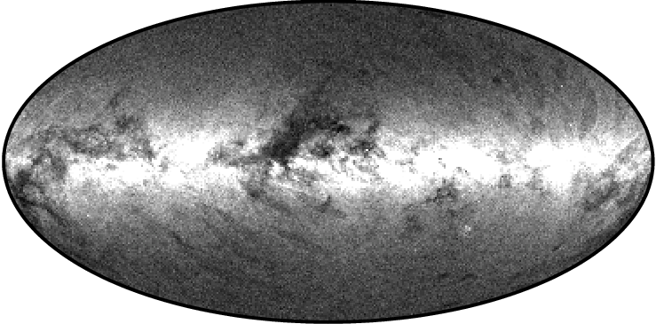

La cerca binària és un algoritme eficient que permet trobar un element en una llista ordenada.
Es basa en dividir per la meitat repetidament la llista que conté l'element i descartar aquella meitat de la llista en la qual l'element no pot estar per massa gran o massa petit.
Animació sobre el funcionament de la cerca binària
Exemple

Per entendre l'eficiència d'aquest algoritme podem pensar en el catàleg estelar Tycho-2 que conté informació sobre les 2 539 913 estrelles més brillants de la nostra galàxia. Si intentéssim buscar en el catàleg una estrella en concret començant pel començament i recorrent-lo sencer (cerca lineal) podriem haver d'examinar les 2 539 913 d'estrelles en el pitjor dels casos.
En canvi, si el catàleg estigués ordenat alfabèticament segons el nom de les estrelles, i apliquéssim l'algoritme de cerca binària, hauriem d'examinar 22 estrelles en el pitjor dels casos.
Activitat
Escriviu amb pseudocodi un programa que, a partir d'un nombre introduït per l'usuari, mostri per pantalla tots els múltiples d'aquest nombre menors a 100
.gif)